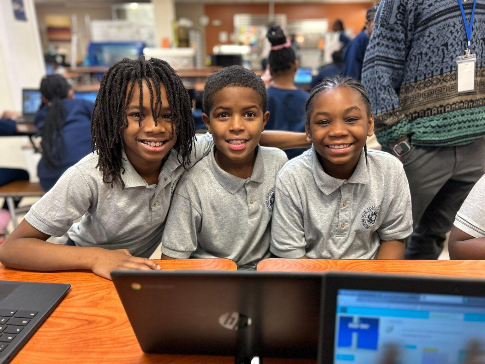
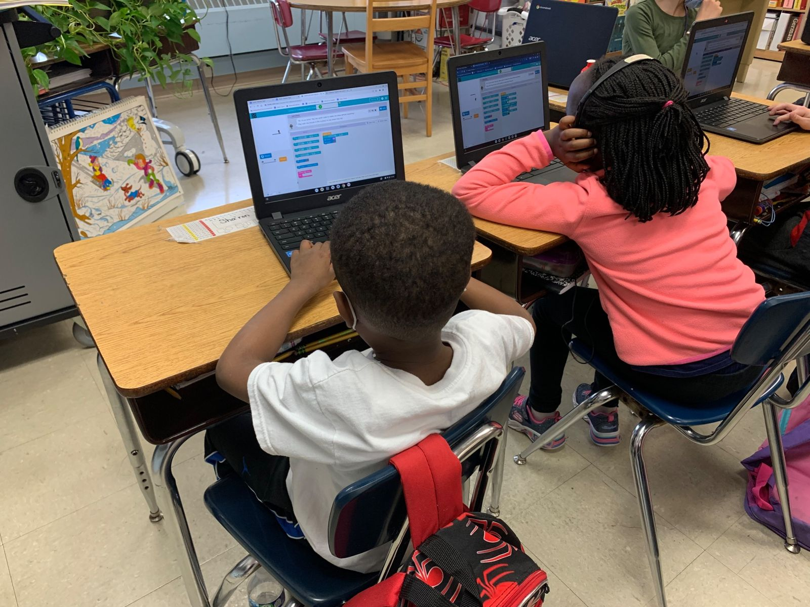

Middle School · Grades 6–8
Where students continue to build
Middle school is when many students are open to new experiences. PUMP-CS helps grades 6–8 teachers launch stand-alone CS courses or bring computing into the STEM classes they already teach.

Getting started
Three ingredients designed to bring CS to grades 6–8
Whether you teach technology, math, science, or a specials rotation, there is a starting point that fits your schedule and your students.
No experience required
PUMP-CS has prepared teachers who are new to computer science since 2010. Workshops start from the basics and build toward a full course.
A stand-alone course
Launch a semester or year-long course with Code.org's CS Discoveries, a curriculum PUMP-CS has supported in cohorts around the state.
CS inside STEM
Add computer science modules to the science, math, and technology curricula you already teach.
Curricula & tools
What you may explore
The final list for each workshop will be confirmed with the program announcement.
Code.org CS Discoveries
An introductory course covering problem solving, web development, games and animations, data, and physical computing.
Project GUTS
Computational modeling and simulation activities that connect CS to middle school science. PUMP-CS piloted Project GUTS with Wisconsin teachers.
Physical computing
Programmable boards and robots that connect code to the real world. See the PK–8 physical computing tools.
Block-based coding
Scratch and similar environments that let students build interactive stories, games, and animations.
What you'll do
Practice as a student, plan as a teacher
Work through the lessons
Complete the activities your students will do, so you can anticipate questions and misconceptions.
Model and discuss
Facilitators model lessons and teaching strategies, then teachers practice and reflect together.
Plan for equity
Use inclusive strategies that help every student, including those underrepresented in computing, see a place for themselves.
Map your year
Leave with a plan for pacing, materials, and support for the coming school year.
PUMP-CS in Wisconsin middle schools
Taking middle school CS statewide
Middle school professional learning began on the Marquette campus and grew to regional cohorts across Wisconsin.
- 2016CS in every MPS middle schoolA $1 million NSF award set out to certify enough Milwaukee Public Schools teachers to bring CS to every school in the district, including every middle school.
- 2017Access for every middle schoolerWisconsin's first K–12 CS standards called for every middle school student to have access to computer science instruction.
- 2019Regional CS Discoveries cohortsWorkshops that started at Marquette expanded to Eagle River, Green Bay, and Wausau with partners including CESA 7, NWTC, NTC, Wausau Schools, and Northland Pines, reducing travel for teachers in regions with little prior access.
- Ongoing60+ hours of supportMiddle school programs often include 60 or more hours of professional development across a summer institute and academic-year follow-up sessions.
In the classroom
Students building with code


Standards
Aligned to the standards that guide Wisconsin
Workshops align with the 2026 CSTA PK–12 CS Standards, and connect with Wisconsin's Academic Standards for Computer Science, updated in November 2025. PUMP-CS director Dennis Brylow co-chaired the committee that wrote Wisconsin's first K–12 computer science standards, approved in 2017.
Year-round support
Keep learning after the summer
PUMP-CS will help coordinate ongoing professional learning through the school year, and the Wisconsin Dairyland CSTA chapter plans monthly professional learning community sessions so you can share ideas with other Wisconsin educators. Participant stipends are administered directly by CSTA.
The model grows out of the Virtual Professional Learning Communities PUMP-CS has run for its teacher cohorts, which CSTA members from across the region have attended so they could start similar communities in their own areas.
- Summer workshopHands-on, facilitator-led training with Wisconsin teachers.
- Classroom launchBring the curriculum and tools to your students in the fall.
- Monthly PLC sessionsShare what is working with other Wisconsin educators.
- Follow-up and coachingReturn sessions and peer support to sustain your program.
Dates to be announced
Exact dates, location, and application details will be announced. Questions? Visit the contact page.
Teaching other grades?
See the elementary school (PK–5) and high school (9–12) pages.